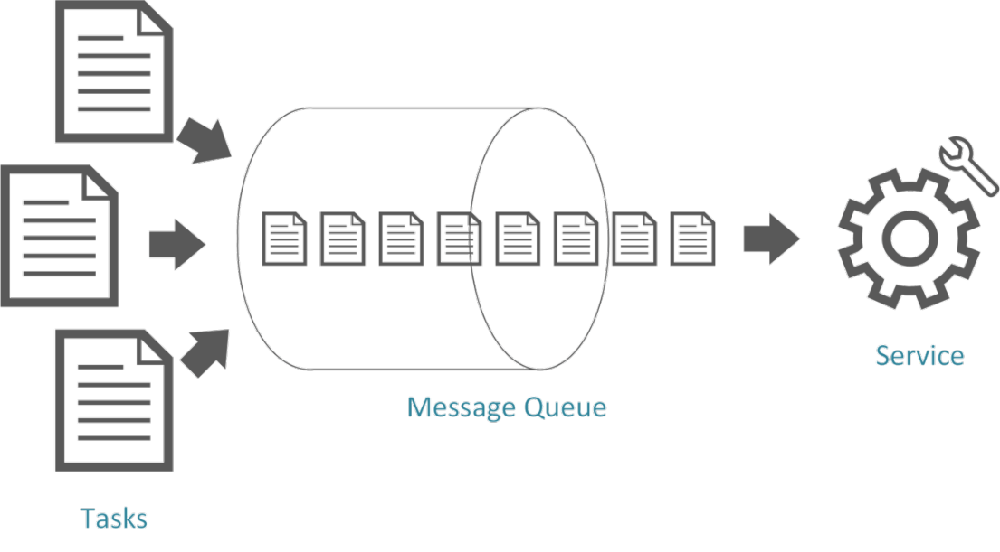
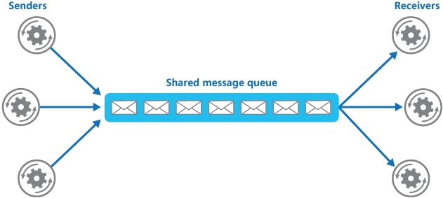
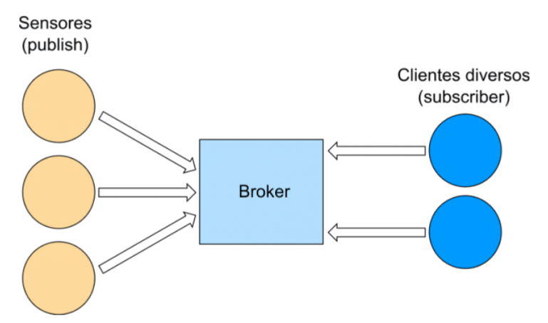
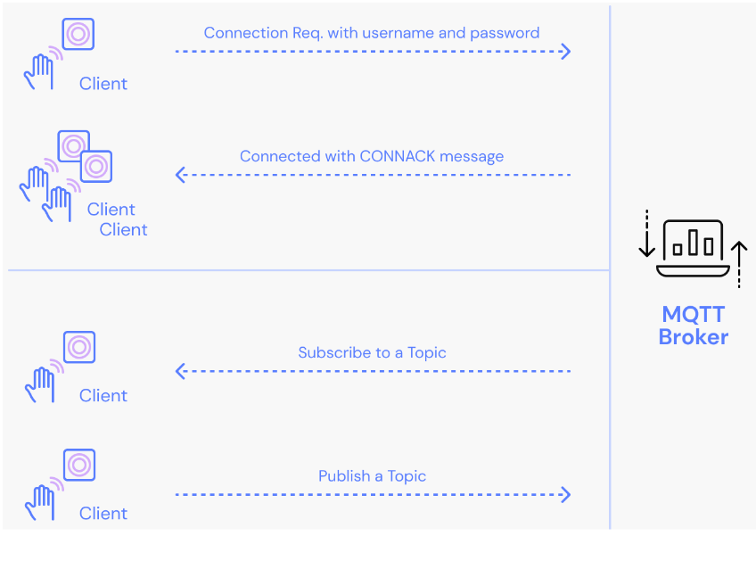
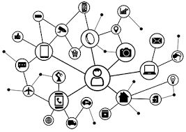
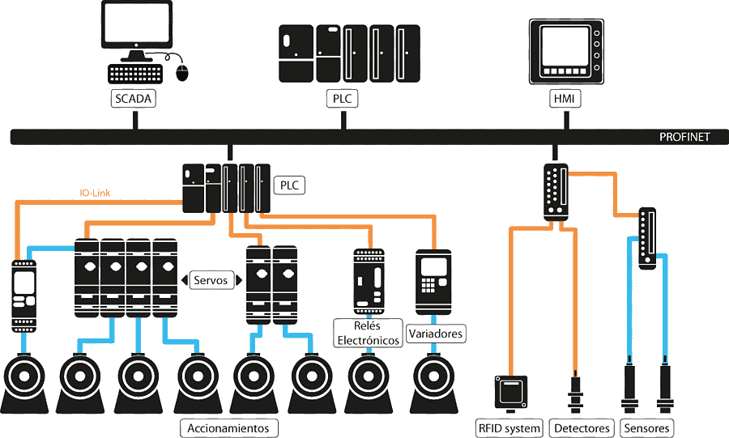
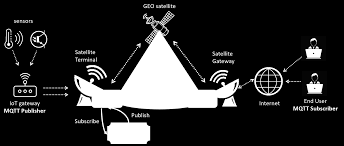
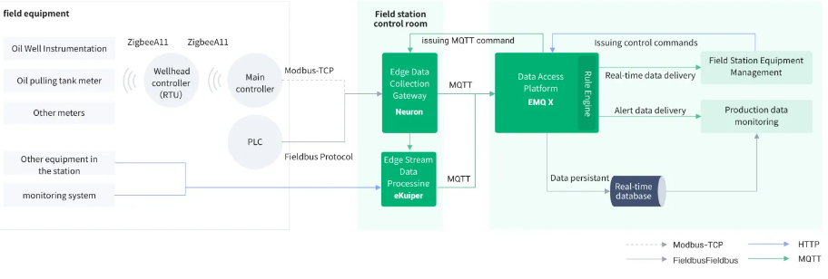
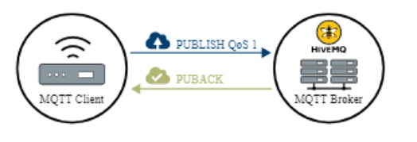
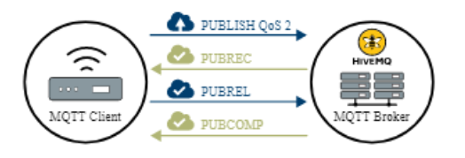

MQTT - Message Queueing Telemetry Transport
- Introdução
O que é Message Queueing Telemetry Transport
Message Queueing: enfileiramento de mensagens

Múltiplas tarefas dividindo uma mesma fila para múltiplos serviços.

Telemetria: do grego tele (remoto) e metria (medida).
Tecnologia que permite medição e comunicação de informações.
Geralmente atribuída a comunicações sem fio.
MQTT é um protocolo de comunicação da camada de aplicação modelado
sobre TCP/IP. Há uma variação para redes não TCP/IP chamada MQTT-SN,
esta é destinada para outros tipos de rede como ZigBee.
MQTT é mais visto cotidianamente em redes que envolvam IoT (internet das
coisas)
História
Protocolo de comunicação criado pela IBM na década de 90.
Fornecimento de mensagens através de publishers e recepção de
mensagens através de subscribers sem filas de espera.
Projetado para baixo consumo de banda e hardware.
Primeiramente utilizado em monitoramento de oleodutos.
Como Funciona

O MQTT se comunica através da arquitetura publish-subscriber: diversos
publicadores/emissores/sensores que chegam ao message broker, um servidor que
recebe todas as mensagens e roteia para os assinantes/subscribers dos serviços de
um ou mais publishers.

MQTT Brokers
O MQTT Broker é a entidade central entre todos os clientes (publishers e
subscribers). O broker exerce checagens de rotina entre as partes envolvidas e depois de
confirmar as regras de negócio envolvidas, inicia a transação (transactions).
Transactions em software são uma sequência de troca de informações
padronizadas em uma determinada maneira, de forma que as mudançasacarretadas pela troca de informações só são completadas se a sequência for
completa.
MQTT brokers permitem dispositivos fazerem requisições para conexão e
autenticar dispositivos baseado nas informações dadas pelo mesmo. Uma vez
autenticados, dispositivos podem enviar informações através de TLS encryption
(opcional).
Outra característica interessante dos message de brokers é guardar
mensagens para reenvio posterior em caso de conexão perdida.

Entre as principais opções de MQTT Brokers a principal diferença está entre
os brokers gerenciados por terceiros e os brokers gerenciados pelo próprio servidor.
Brokers gerenciados por terceiros são interessante como serviços em núvem (AWS IoT
Core, Azure IoT Hub).
Estrutura
O pacote de controle é constituída de 3 partes: cabeçalho fixo, cabeçalho
variável e payload.
O cabeçalho fixo possui 4 bits para definir tipo do pacote de controle, 3 bits
para flags e um byte adicional para suportar bits adicionais do cabeçalho variável e
payload.
Cabeçalho variável não é suportado por todos os tipos de mensagem, este
trás informações da identificação do pacote e possui 2 bytes.
Payload inclui a mensagem como um todo (normalmente os tópicos). Os
pacotes de confirmação (CONNACK, PUBACK, SUBACK...) não necessitam de um
payload
Métodos
CONNECT: Cliente solicita uma ligação com um servidor
CONNACK: Reconhece solicitação de conexão
PUBLISH: publicar mensagem
PUBACK: reconhecimento de publicação
PUBREC: Publicação recebida. (QoS 2 Publicação recebida., part 1)
PUBREL: Publicação publicada. (QoS 2 Publicação recebida., part 2)
PUBCOMP: Publicação completada. (QoS 2 Publicação recebida., part 3)
SUBSCRIBE: Inscrever-se em um tópico
SUBACK: Reconhecimento de inscrição
UNSUBSCRIBE: Cancelamento de inscrição em um tópico
UNSUBACK: Reconhecimento de cancelamento de inscrição.
PINGREQ: PING request
PINGRESP: PING response
DISCONNECT: Notificação de desconexão
Aplicações
Internet of Thing (IoT)

MQTT é largamente utilizado em IoT tanto em redes cabeadas quanto
wireless devido a sua simplicidade em implementação de sensores e comunicação a
um ou mais receptores, considerando tanto sistemas como Smart Buildings (prédios
inteligentes), CAN (Controller Area Networks) e comunicações em tempo real como
robótica e outros sistemas de Múltiplas Entradas Múltiplas Saídas (MIMO).
Outra característica marcante do IoT é sua escalabilidade, uma vez que o
padrão de adicionar publishers e adicionar subscribers pode ser replicado
infinitamente, levando em consideração apenas a capacidade do broker de
processar as informações vindas dos publishers para os respectivos subscribers.
SCADA

MQTT é comumente utilizado para Sistemas de Supervisão e
Aquisição de Dados. Este modelo foca em verificação da qualidade, redução dos
custos operacionais, maior desempenho de produção e base para outros sistemas.
O monitoramento das variáveis do processo produtivo através de
sensores e outros publishers permite a determinação de valores ótimos. Desta forma
os dados cruzados dos publishers pode gerar alarmes para subscribers sob a
motivação de qualidade da produção.
A centralização da leitura de todos os sensores em campo permite
uma extração, transformação, carregamento e posteriormente uma análise
exploratória de dados (ETL e EDA) superior a um sistema descentralizado, desta
maneira a “virtualização dos instrumentos” requer uma quantidade menor de
operadores do sistema. Desta mesma maneira, o desempenho do diagnóstico e
substituição de máquinas defeituosas pode ser feito rapidamente
MQTT e Petróleo

A estrutura tradicional utilizando PLC Protocol e Industrial Bus
Protocol foi substituída por MQTT para gerenciamento remoto de equipamentos do
campo petrolífero. A informação é lida em tempo real e entregue para a um data
center para processamento e gerenciamento central do campo

Smart Building/Smart Home Automation
Seguindo o modelo horizontalizado de publish-subscribers o
gerenciamento de prédios inteligentes facilita a integração de centenas de sensores.
Considerando dispositivos IoT fabricados com uma placa de rede comumente
dispondo IPv6 é possível integrar televisores, geladeiras, cafeteiras, ar condicionado
e gerar tarefas de rotina como automação de compras (Smart Refrigerator que faz
compras sozinha).
Sistemas de segurança a distância e verificações de múltiplos
sensores, cadastramento de portas eletrônicas também são possíveis
utilizando MQTT. A central de monitoramento utilizando a leitura de múltiplos
publishers pode ser entregue a um subscriber com sistema de alarme e
comunicação direta com dispositivos móveis.
Web
Real-time Apps
Enquanto websocket pode ser s escolha mais intuitiva, MQTT é uma
excelente opção para aplicações em tempo real. Além do protocolo ser leve, baixa
potência e funcional em conexões ruins ou instáveis.
A escalabilidade da arquitetura possibilita a escalabilidade para
milhões de usuários em um backend como chatbox, user activity data
(clickstream) e push notifications. Sessões persistentes também podem ser
integradas pelo cliente e broker. Assim como mensagens podem ser retidas
pelo broker, de forma que um subscriber novo pode receber mensagens
antigas dos publishers (histórico de chat).
Detalhes
Quality of Service
MQTT oferece 3 níveis de QoS:
QoS 0: At most once. Sem garantia de entrega. Disparar mensagens
e esquecer.
QoS 1: At least once. O cliente guarda a mensagem até receber um
PUBACK do Message Broker. Desta forma a mensagem pode ser enviada
outras vezes.

QoS 2: Exactly once. Esse nível garante que cada mensagem seja
recebida apenas uma vez. A garantia é feita pelo “four-way
handshake” entre o cliente e o broker utilizando PUBREC, PUBREL e
PUBCOMP.

Todas as mensagens enviadas com QoS 1 e 2 são armazenadas até o
cliente estar online. No entando isso só é possível caso o cliente tenha uma sessão
permanente
Segurança
Os pilares da segurança do MQTT são identidade, autenticação e
autorização. Identidade nomeia clientes e suas respectivas autorizações como por
exemplo a quais publishers um subscriber tem acesso. Enquanto autenticação
comprova a identidade daquele cliente.
Um dos desafios do IoT é a segurança devido a baixo processamento de
dispositivos, impossibilitando criptografias muito pesadas. A segurança do MQTT
está dividida entre as camadas de Rede, Transporte e Aplicação. A camada de rede
pode ser confiavel utilizando cabeamento proprietário ou VPN entre todos os clientes e brokers. A nível de transporte a certificação TLS/SSL garante que a mensagem
não possa ser lida durante a transmissão provê autenticação para ambas as partes.
A segurança a nível de aplicação é feita na autenticação de diversas formas como
usuário e senha e cadastramento de dispositivo. Autenticação de 2 fatores também
é uma possibilidade.
A integridade dos dados pode ser verificada por múltiplos algoritmos e
métodos. Os mais utilizandos,do mais rápido para o mais lento, são:
Checksum.
HMAC (Hash Message Authentication Code Algorithm).
Verificação de Assinatura Digital
Firewall
Diversos recursos da rede podem ser configurados para estabelecer
maior segurança, como:
Bloquear UDP (MQTT usa TCP) na rede
ICMP packets/ping/traceroute (dependendo da rede).
Bloquear outras portas da rede que não sejam 1883 (MQTT
Default Port) e 8883 (MQTT over TLS).
Tráfego apenas dentro do IP range da rede.
Bloquear root access.
Outros métodos:
X.509 Certificate:TLS do cliente para o broker.
OAuth 2.0: authorization framework usando JSON Web Token (JWT).
Payload Encryption: criptografia apenas do campo da mensagem com
metadados intactos.
SELinux (Security Enhanced Linux by NSA).
SSH keys.
Brokers
Há uma gama vasta de opções de MQTT Brokers para se escolher. Os prós
e contras na escolha de MQTT Brokers costumam ser:
Simplicidade de implementação.
Simplicidade de escalabilidade horizontal/vertical.
Infraestrutura prévia.
Suporte a WebSocket.
Endereço e porta hosteado por si próprio ou gerenciado.
As opções mais comuns na atualidade são:
AWS IoT Core MQTT
Mosquitto
HiveMQ
EMQ X
Azure IoT Hub
VerneMQ
MQTT vs Outros protocolos
MQTT-SN
MQTT-SN foi criado para permitir redes de baixa potência
em locais remotos onde 4G-LTE, NB-IoT e WiFi não resolvem o
problema. Nestas condições protocolos como LoRa ou ZigBee que
consomem baixa potência e conseguem transmitir longas distâncias.
CoAP (Constrained Application Protocol)
Semelhante ao HTTP, porém construído sobre UDP e projetado
para dispositivos de recursos restritos.
Interessante para casos de broadcasting/multicasting em IoT.
XMPP (Extensible Messaging and Presence Protocol)
Protocolo baseado em XML para troca de mensagens
instantâneas. Não possui flexibilidade de QoS.
Kafka
Messaging System baseado na arquitetura publish/subscriber.
Enquanto MQTT foca na comunicação Client-Servidor, Kafka foca em
processar dados em tempo real. Uma combinação entre MQTT e Kafka é
comum em ciência de dados.
HTTP
Arquitetura MQTT consome em média 20% menos energia.
HTTP possui limitações da arquitetura rest para soluções em tempo real e
limitação de conexão On-Demand.
- Conclusões
Considerando MQTT, suas ferramentas e arquiteturas. É uma
ferramenta importantíssima para robótica, recolhimento de dados através de
sensores, automação industrial e IoT.
Um fator que pode ser levado em consideração é a arquitetura
publish/subscriber, uma vez que o mesmo é preso a ela a partir do
message broker. Aplicações diferentes podem se tornar limitadas em
escalabilidade vertical e pode não ser a melhor abordagem primária.
A arquitetura pode não ser tão intuitiva quanto a arquitetura
REST a priori. Load balancing pode se tornar um desafio dependendo
do Message Broker utilizado.
MQTT é um protocolo muito flexível, leve e com aplicação prática
vasta. A combinação deste com diversos outros é capaz de criar
sistemas que integrem multiplas aplicações. Decisões de
implementação e escolha de protocolo sempre serão sensíveis ao
contexto das mesmas, no entanto a flexibilidade em diversas ocasiões
garante a escolha do MQTT como uma das principais ferramentas do
mercado atual.